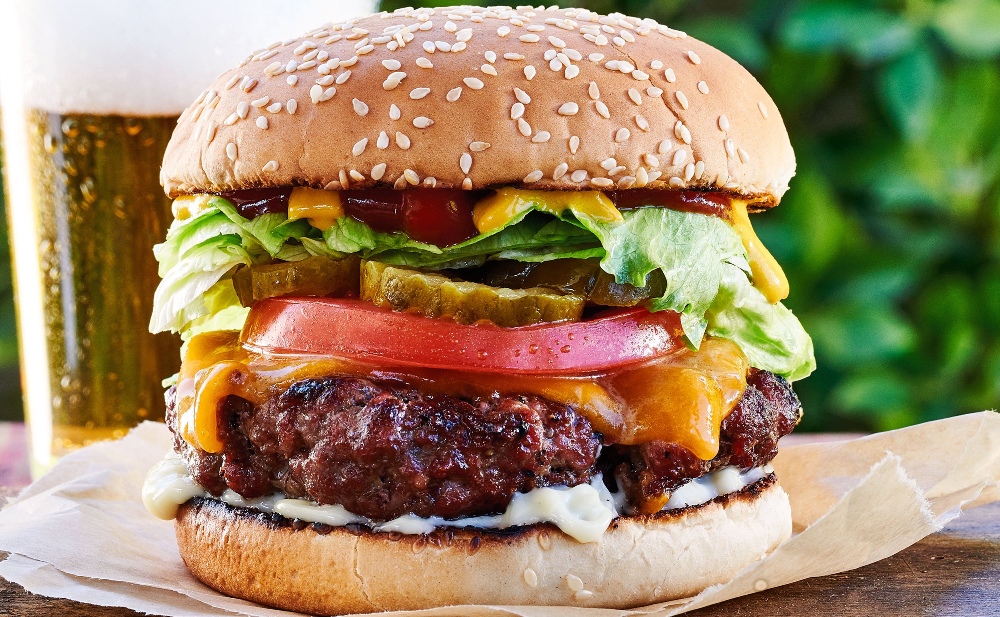

Home
Cheeseburger Recipe

Description:
A Cheeseburger is a classic american dish that involves to slices of bread, and a patty of beef with cheese on top. The rest is like a sandwich, up to interpretation!
Ingredients:
- Ground Beef Patty
- Cheese
- Salt
- Pepper
- Garlic Powder
- Whatever toppings you want!
Steps:
- Season the patty on both sides with salt, pepper, and garlic powder
- Heat up the Grill until the internal temperature is 450 degrees fahrenheit
- Cook the patty on the grill for four minutes on each side, put the cheese on top of the burger with one minute remaining to make it gooey.
- Put the cooked patty on a bottom bun
- Then, just put whatever toppings you want on like:
- Cheese
- Lettuce
- Tomato
- Pickle